Mr. Musa obtained a Bachelor of Science degree in Agricultural Engineering from the American University of Beirut in 1957. Mr. Musa is a life member of the World Poultry Science Association and co-founder of its branch in Lebanon. He has been a writer and lecturer of technical and poultry subjects since 1965. In the 1960s and 1970s, he played a major role in establishing export markets for Lebanese poultry production in the Arab World. His commercial experience in the poultry industry dates back to 1957 when he became the production manager at Greenleaf Poultry Company in Zahle, Lebanon until 1958. Thereafter, he established and managed thirteen poultry and poultry related operations in the Arab world of which seven are still operational. Mr. Musa has established projects in Lebanon, Syria, Jordan, Saudi Arabia, Egypt, and Sudan. Mr. Musa is the founder, shareholder and director in Tanmia, Lebanon, a poultry meat processing Company established in 1996 by the Lebanese shareholders of Wadi.
Wadi Poultry Group Board of Directors
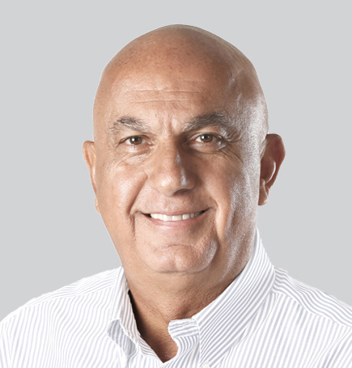
Mr. Tony Freiji
Executive Chairman, Shareholder
Mr. Tony is the younger brother of Mr. Musa Freiji, and earned a Bachelor of Science degree in Agricultural Engineering from the American University of Beirut in 1981 and a Master of Science in Poultry Nutrition from Iowa State University in 1983. He has been with Wadi since 1984 and managed all ongoing production and commercial related activities as well as expansion projects. Tony is also a shareholder and director in Tanmia, Lebanon, a poultry meat processing Company established in 1996 by the Lebanese shareholders of Wadi.
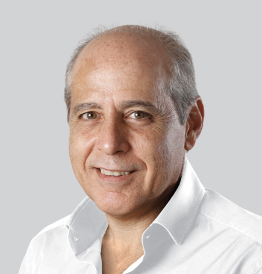
Mr. Ramzi P. Nasrallah
Vice-Chairman & Managing Director, Shareholder
Mr. Ramzi is responsible for the general administrative direction and control of the corporate financial functions of the company and oversees all audit activities and budget plans. He joined Wadi in 1984, at the time of establishment of their poultry companies, which are now consolidated under Wadi. He is currently the Managing Director of all the subsidiaries of the Wadi Group, a member of the Executive Committee, and the Board’s Vice Chairman. He graduated in 1980 with a Bachelor in Business Administration from the University of Prince Edward Island, Canada, followed by a Master in Business Administration, with a focus on finance, from the University of Houston (Texas) in 1982. Ramzi is also a shareholder and director in Tanmia, Lebanon, a poultry meat processing Company established in 1996 by the Lebanese shareholders of Wadi.
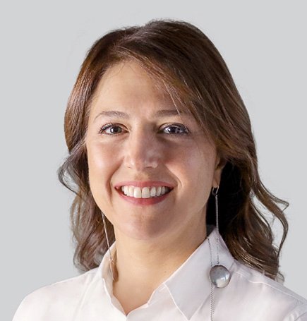
Mrs. Rima Freiji
Director, Head of Governance Committee, Shareholder
Mrs. Rima Freiji, a Lebanese national born in 1969, joined Wadi in 2008 as Corporate Affairs Advisor before being appointed Chief Development Officer (CDO) in 2011. In her role, she leads initiatives that foster business growth and strengthen the company’s institutional framework. She earned a BA in Business Administration from Emory University in Atlanta in 1991, followed by a Master’s degree in International Economics and Management from SDA Bocconi University in Milan in 1994. Rima is a shareholder and Chairwoman of the Board of Tanmia, a Lebanese poultry processing company established in 1996 by Wadi’s Lebanese shareholders. Rima is also President of the Lebanese Private Sector Network. Since 2012, she has chaired Wadi Group’s Nomination and Corporate Governance Sub-Committee.
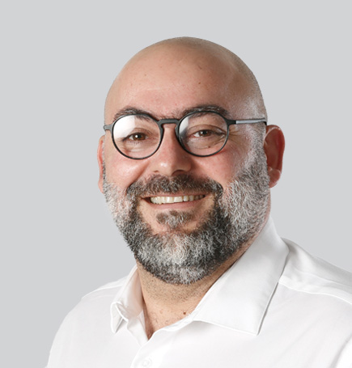
Mr. Akram Malouf
Director
Mr. Akram Nazmi Malouf, a Lebanese national born in 1969, serves on the Board of Wadi Group, representing the interests of Freiji Company. A seasoned lawyer, he is the Senior Lawyer and Managing Partner of Nasri Maalouf & Akram Maalouf Law Firm in Beirut, Lebanon, and has been a member of the Lebanese Bar Association since 1993. His academic path reflects both breadth and depth in law and business. He earned a French Master of Law from Lyon University in 1993, followed by an LLM in Criminal Law from the Lebanese University in 1995. He later expanded into business with an MBA in Marketing and Management from École Supérieure des Affaires in Beirut in 2002, and further specialized in enterprise and investment law with a degree from IDLO in Rome in 2004. Akram is also a member of Wadi Group’s Audit and Risk Sub-Committee.
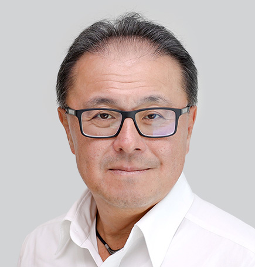
Mr. Masaaki Kawarai
Chief Strategy Officer, Director
Mr. Masaaki Kawarai, a Japanese national born in 1968, is a Board Member and the Chief Strategy Officer of Wadi Poultry S.A.E. He represents Mitsui & Co., Ltd., which he joined in 1993, as a secondee to Wadi Poultry S.A.E. Throughout his career, he has focused on various developments of food businesses through trading and investments in grain, oilseeds, and animal protein across Asia, Canada, the USA, Australia, Russia, the Middle East, and Africa. He holds a BA in Politics and Economics from Waseda University in Tokyo.
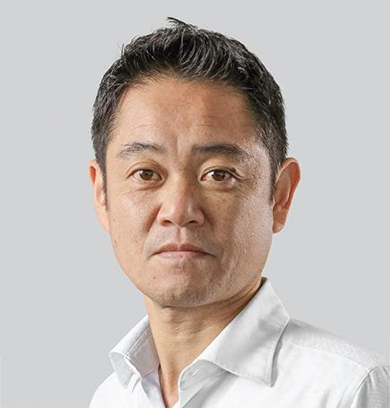
Mr. Hiroshi Furuya
Director
Mr. Hiroshi Furuya, a Japanese national born in 1973, is a non-executive independent Board Member of Wadi Poultry S.A.E. He currently serves as General Manager of the Food & Retail Business Department at Mitsui & Co., Middle East Ltd., based in Dubai, U.A.E. Since joining Mitsui & Co., Ltd. in 1997, he has built extensive experience in trading, investment, and management across the food and automotive sectors, including 10 years of international assignments in the United States and Thailand. He earned an undergraduate degree from Waseda University’s Faculty of Literature in 1997 and an MBA from IESE Business School in Spain in 2017.
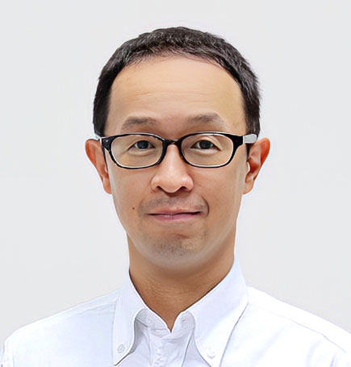
Mr. Shigeyuki Nishimura
Director
Mr. Shigeyuki Nishimura serves as an independent, non-executive Board Member of Wadi Poultry S.A.E. He is currently the General Manager of the Livestock Project Department II in the Food Business Unit at Mitsui & Co., Ltd. He brings over 20 years of experience in building and strengthening a sustainable global food value chain, with extensive expertise in grain and feed material trading as well as investment activities in this sector.
Executive Committee
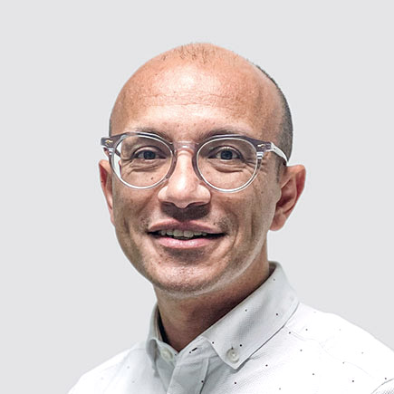
Mr. Ahmed Bayoumi
CEO - Industrial Division
Mr. Ahmed Bayoumi graduated from Ain Shams University and later earned an MBA in Marketing and Strategic Management from the German University in Cairo, along with a Project Management Diploma from the University of Cambridge in London. He has worked with several multinational companies and has also served in leadership roles within NGOs. In 2015, driven by his belief in the importance of human wellbeing and its impact on business performance, Ahmed founded Hive Coaching to promote self-care and practices that enhance mental, emotional, and professional growth. He is a Certified Positive Psychology and Career Coach, Parenting Educator, and Business Development Consultant, combining his engineering background with a passion for management and human development.
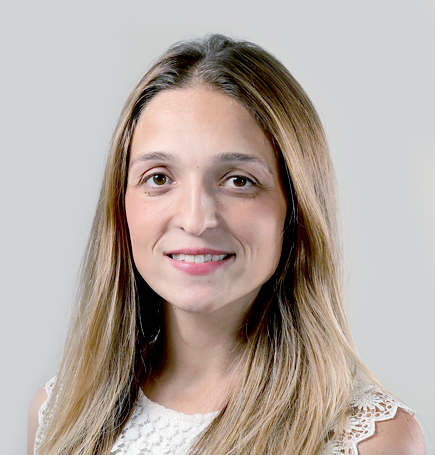
Mrs. Engy Metwally
Chief Audit and Compliance Officer
Mrs. Engy Metwally joined Wadi in 2015 and currently serves as Head of Internal Audit. She is responsible for ensuring that financial, operational, and compliance practices—and their related controls—are properly designed and effectively implemented. Her role also includes examining and evaluating business activities and risks to safeguard company assets, ensure regulatory compliance, and strengthen financial and operational control systems. With 16 years of professional experience, Engy has built expertise in internal controls, risk management, process re-engineering, business development, and change management. Prior to Wadi, she spent 11 years at ExxonMobil in both local and international roles, where she served as Zone Controls Advisor and provided consultation on controls, processes, and business continuity. She holds a Master of Science degree in Business Administration and is a Certified Risk Manager from the London School of Business and Finance.
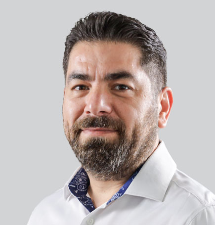
Mr. Firas Jrab
Chief Growth and Optimization Officer
Mr. Firas Jrab holds a BA in Accounting from Beirut Arab University, where he graduated in 1999. He has also completed advanced studies in CMA, Digital Transformation Platforms, and Black Belt Six Sigma. With more than 25 years of experience in manufacturing and commercial operations, Firas specializes in financial planning, cost optimization, policy and procedure development, risk and opportunity management, and strategic business partnering. Throughout his career, he has held leadership roles in international companies across Saudi Arabia, the UAE, Jordan, and Lebanon, with regional responsibilities covering the GCC countries.
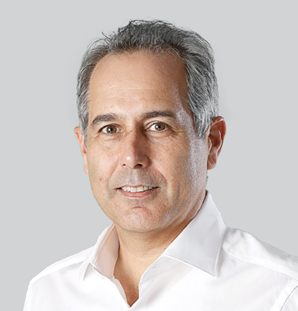
Mr. Khalil Nasrallah
Business Excellence VP, Shareholder
Mr. Khalil joined Wadi Group in 1989 as Agricultural Manager and was later appointed Executive Manager and then Sector Head after the formation of the Agrofood Sector. In 2020 he was appointed to the role of Business Excellence VP which includes Human Resources, Quality Assurance, Health and Safety and Corporate Marketing activities. Khalil graduated in 1986 with a Bachelor of Science in Agriculture from the American University of Beirut, followed in 1989 by a Master of Science in Horticulture from the University of Guelph, Canada. Khalil is also a shareholder and Board Member of Tanmia, Lebanon, a poultry meat processing company established in 1996 by the Lebanese shareholders of Wadi. Khalil is also a member of Wadi Group’s Group’s Nomination and Corporate Governance Sub-Committee.
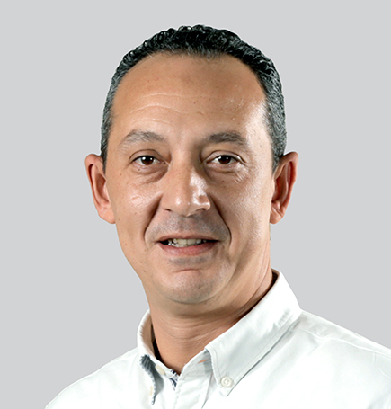
Mr. Mohamed ElKoshairy
Chief Corporate Affairs Officer
Mohamed Elkoshairy graduated from the Police Academy in 1998 with a Bachelor’s degree in Law and Police Sciences. He began his career at the Ministry of Interior, where he held various positions until 2010. That year, he was seconded to the Ministry of Investment, working with the General Authority for Investment and the North West Gulf of Suez Development Authority. In this role, he gained extensive experience in investment and relationship management while overseeing the resolution of investor issues in the Minister’s office. In 2015, Mohamed joined Wadi Company as Manager of Security and Government Relations. Under his leadership, these departments achieved significant development, and his responsibilities later expanded to include Administrative Affairs, Vehicles, Insurance, and Legal Services. With broad experience across both the public and private sectors, Mohamed is recognized as a distinguished professional and a key contributor to the company’s growth.
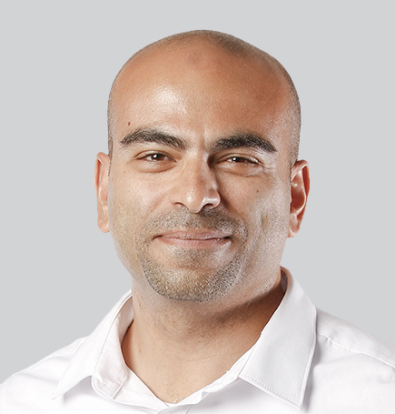
Mr. Mohamed Farghally
Wadi Poultry Group CFO
Mohamed brings more than 21 years' experience in Financial Management & Financial Planning as well as Mergers & Acquisitions. Previously, he held several roles in international and listed companies covering different industries including real estate, manufacturing, poultry and agriculture in Dubai, Egypt and KSA. He joined Wadi Group in May 2020 as a Group Head of Finance & Investment, and he was the project leader for Mitsui & Wadi Poultry S.A.E. & subsidiaries transaction. Before joining Wadi Group, he assumed several leadership positions including Head of Finance and CFO in Arab Poultry Breeders (KSA & UAE) and TADCO (Tadawul Listed Co.), where he led the acquisition of USD 100 million assets and raised and restructured USD 30 million bank debt. Mohamed's career started in Dubai, he worked in Future Pipe industries as a Financial Analyst, a Senior Management Accountant in Dubai World and a Mergers & Acquisition Manager in Kingdom Hotel Investments, where he was involved in the divestment of USD 500 million assets in Africa & Asia He holds a BA in Business Administration from the American University in Cairo with a concentration in finance, and he is a Certified Management Accountant (CMA) from IMA, USA NI.
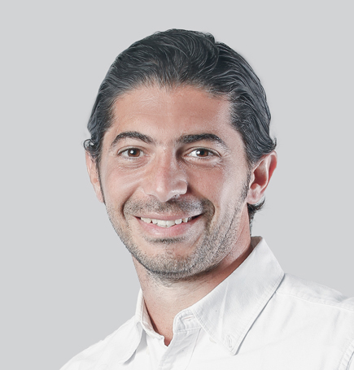
Mr. Mostafa Mehanna
CEO - Agri Food Division
Mr. Mostafa Mehanna has served as CEO of Wadi’s Agri Food Division since November 2018. He graduated from the American University in Cairo with a Bachelor’s degree in Economics. With more than 20 years of experience in FMCG companies, Mostafa has held both local and regional leadership roles at Procter & Gamble, PepsiCo, and Americana. At Americana, he served as North Africa & Levant Market Director, overseeing operations across 12 countries.
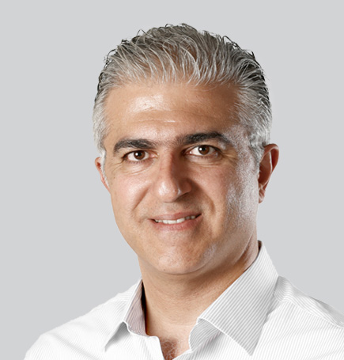
Mr. Puzant Dakessian
CEO - Poultry Division
Mr. Puzant Benon Dakessian earned a Bachelor of Science degree from the American University of Beirut in 1995, followed by a Master of Science in Poultry Science from the same institution in 1997. With more than 28 years of experience in the poultry industry, Puzant’s career spans the full spectrum from technical operations to commercial management. He spent around 15 years with Aviagen, a leading global breeding company, covering markets across Africa, the Middle East, and Southeast Asia. In 2016 he joined Wadi as the CEO for poultry heading the entire production and commercial chains of the operations.
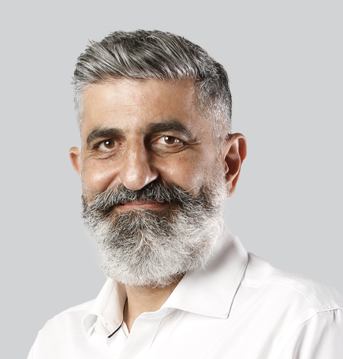
Mr. Wadih Nasrallah
Projects VP, Shareholder
Lebanese/ British National, (1964) Mr. Wadih Nasrallah holds a B.E in Civil Engineering from the American University of Beirut (1985) and an MBA (honors) from the University of Warwick (2000). After graduation, Wadih began his career in the construction sector, working on a variety of projects in Lebanon and across the Middle East. In 1992, Wadih joined Wadi Group in Egypt to establish and manage the Wadi Poultry Grandparent Project at KM 54, and soon was responsible for all construction works and expansions of the group at the time. He then relocated to Lebanon to setup Tanmia, a sister poultry company, and participated in building the Parent and Broiler Farms, Slaughterhouse, Feedmill and Hatchery. Most recently, in 2019, Wadih relocated to Egypt and rejoined Wadi Group, where he is now responsible for New Projects as well as Engineering, Construction and Procurement for the whole group. Post MBA degree, Wadih worked with Ford Motor Company Europe in their Manufacturing Leadership Program. He was an Area Manager of an Engine plant in the UK . This gave him priceless experience and exposure to working in multinational organizations.